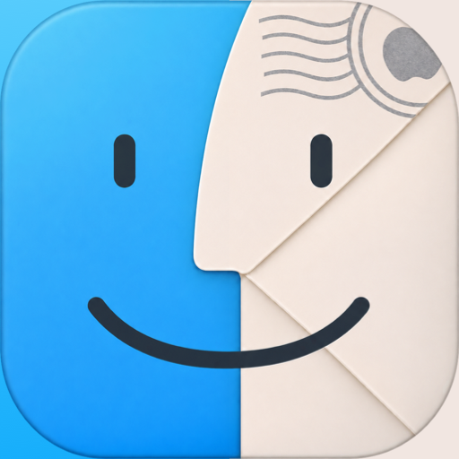
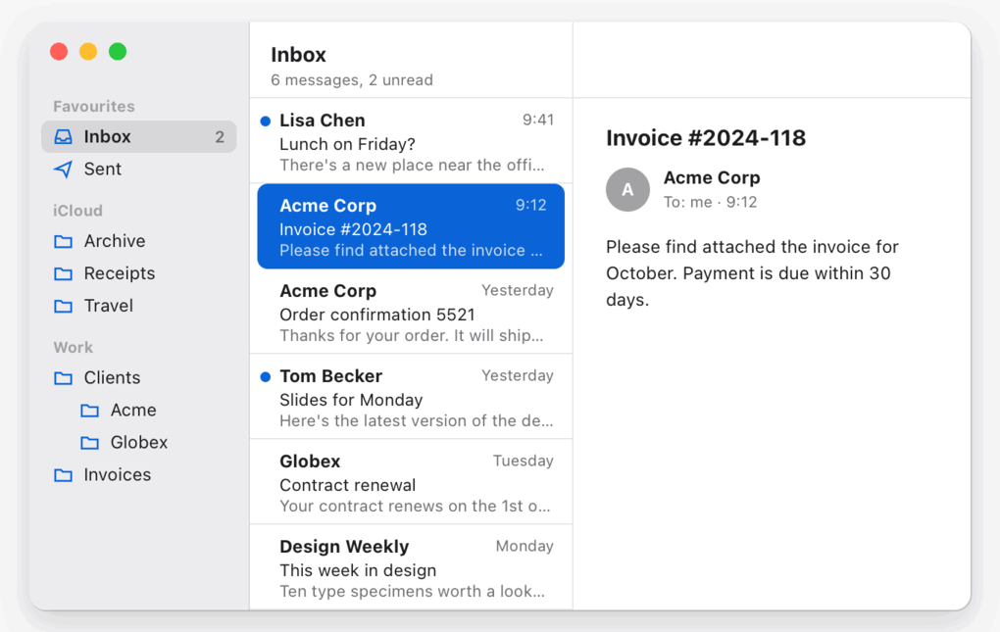

Nostalgy-4-Mail 2.0
File your mail without touching the mouse. Press ⌃S in Apple Mail, type a few letters of any folder, press Return. The message is filed and the next one is ready to read.

Four keys, only while Mail is in front
| ⌃S | Move the selected messages to a folder |
| ⌃C | Copy the selected messages to a folder |
| ⌃G | Go to a folder |
| ⌃⇧S | Move to the folder you used last |
In the picker, use ↑ ↓ or ⇥ to choose, ↩ to confirm and esc to cancel. Every shortcut can be changed in Settings.
Your folders, a few keystrokes away
-
Type a few letters
Find any folder by part of its name. Type several words to narrow it down, for example
arch 2024. -
The next message is ready
After a move, the message below is selected, just as in Mail itself. That works in All Inboxes too, across accounts.
-
Recent folders first
The folders you use most float to the top, so the right one is often already highlighted when the picker opens.
-
Every account, every subfolder
iCloud, Gmail, Exchange, any IMAP account and On My Mac. Nested folders show their full path, each listed once.
-
Stays out of the way
The shortcuts exist only while Mail is in front, so other apps keep theirs. It lives in the menu bar and needs no Accessibility access, only permission to control Mail.
-
Quick from the first keystroke
The folder list is kept on disk and refreshed in the background, so the picker opens at once, centred on Mail's window.
-
Make it yours
Change the shortcuts, hide folders such as Trash or Junk, choose how often folders are refreshed, and open it at login.
Download and open
Releases are published on GitHub. The app isn't notarized by Apple yet, so macOS asks you to confirm it once.
- Download Nostalgy-4-Mail.zip from the latest release and open it.
- Move Nostalgy-4-Mail to your Applications folder and open it.
- Confirm it once. macOS says it can't verify the app; click Done. Then open System Settings › Privacy & Security, scroll down and click Open Anyway next to Nostalgy-4-Mail. Or, in Terminal:
xattr -dr com.apple.quarantine /Applications/Nostalgy-4-Mail.app
- Allow it to control Mail. The first time you use it, macOS asks; click OK. You can change this later in System Settings › Privacy & Security › Automation.
Or build it yourself
It builds with Apple's free Command Line Tools. No Xcode project, no dependencies.
- Install the Command Line Tools, once, if you don't have them:
xcode-select --install
- Download the source and build it:
git clone https://github.com/cubbi/Nostalgy-4-Mail-2.0.git cd Nostalgy-4-Mail-2.0 ./build.sh - Install and open it:
cp -R build/Nostalgy-4-Mail.app /Applications/ open /Applications/Nostalgy-4-Mail.app
Why “4-Mail”?
Nostalgy is a much-loved Thunderbird add-on for filing mail from the keyboard. Version 1 of Nostalgy-4-Mail brought it to Apple Mail as a plug-in, from OS X Lion to Mavericks, but current macOS no longer loads Mail plug-ins. Version 2.0 is a small menu-bar app that drives Mail through AppleScript instead.